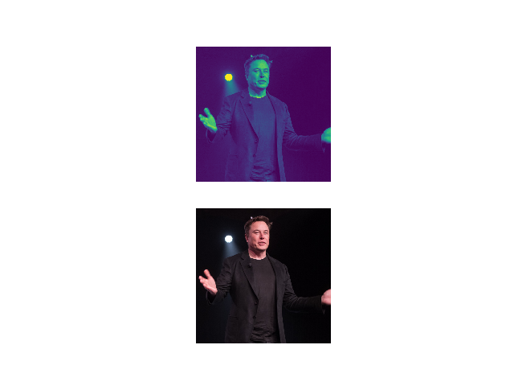
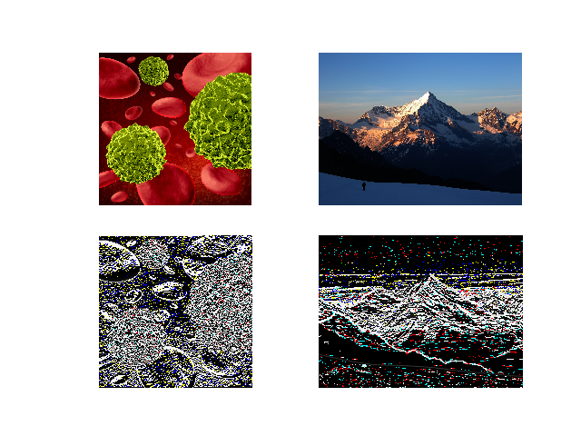
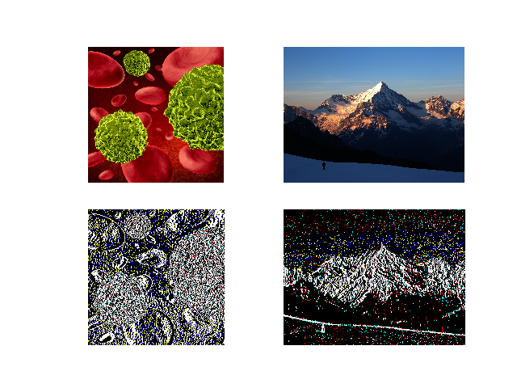

(Semi) Automated Image Processing with pyautocv¶


Project Aims
The goal of pyautocv is to provide a simple computer vision(cv) workflow that enables one to automate or at least reduce the time spent in image (pre)-processing.
Installing the package
From pypi:
pip install pyautocv
From GitHub
pip install pip install git+https://github.com/Nelson-Gon/pyautocv.git
#or
# clone the repo
git clone https://www.github.com/Nelson-Gon/pyautocv.git
cd pyautocv
python3 setup.py install
Available Class
Segmentation is a super class on which other classes build
EdgeDetection is dedicated to edge detection. Currently supported kernels are stored in
.available_operators()Thresholding dedicated to thresholding.
Example Usage
Smoothing
To smooth a directory of images, we can use EdgeDetection’s smooth method as
follows:
from pyautocv.segmentation import *
to_smooth = EdgeDetection("images/people","sobel_vertical")
show_images(*[to_smooth.gray_images(), to_smooth.smooth()])
This will give us:
{kind=link}
Edge Detection
To detect edges in a directory image, we provide original(grayed) images for comparison to images that have been transformed to detect edges.
edge_detection = EdgeDetection("images","sobel_vertical")
# use a gaussian blur
# detect edges with sobel_vertical
show_images(edge_detection.read_images(), edge_detection.detect_edges(operator="sobel_vertical",mask="gaussian",sigma=3.5))
The above will give us the following result:
{kind=link}
To use a different filter e.g Laplace,
show_images(edge_detection.read_images(), edge_detection.detect_edges(operator="laplace",mask="gaussian",sigma=3.5))
This results in:
{kind=link}
Thresholding
To perform thresholding, we can use Threshold’s methods dedicated to thresholding.
We use flowers as an example:
to_threshold = Threshold("images/biology",threshold_method="binary")
show_images(to_threshold.read_images(),to_threshold.threshold_images())
# cats
to_threshold_cats = Threshold("images/cats",threshold_method="binary")
show_images(to_threshold_cats.read_images(),to_threshold_cats.threshold_images())
#potholes
to_threshold = Threshold("images/potholes",threshold_method="otsu")
show_images(to_threshold.read_images(),to_threshold.threshold_images())
# houses
to_threshold = Threshold("images/houses",threshold_method="binary_inverse")
show_images(to_threshold.read_images(),to_threshold.threshold_images())
{kind=link}
{kind=link}
{kind=link}
{kind=link}
These and more examples are available in example2.py. Image sources are
shown in sources.md. If you feel, attribution was not made, please file an issue
and cite the violating image.
Thank you very much
“A language that doesn’t affect the way you think about programming is not worth knowing.” ― Alan J. Perlis
References: